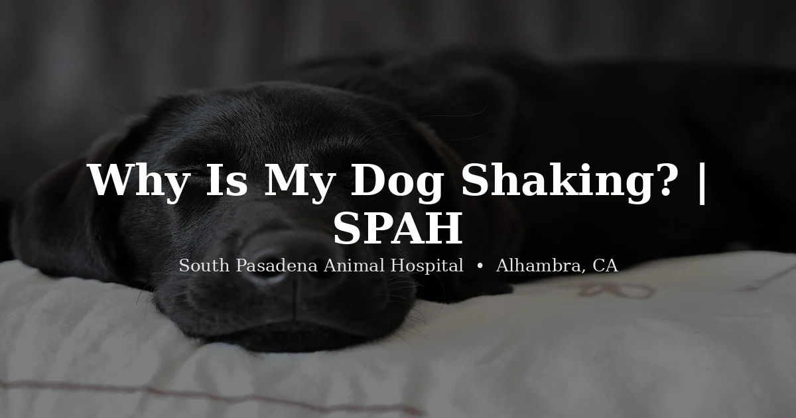

October 14, 2026 · 7 min read
Why Is My Dog Shaking?

Shaking is one of the trickiest signs to read in a dog, because it sits on a spectrum that runs from "completely adorable and harmless" all the way to "get to a vet right now." The trembling Chihuahua on your lap and the dog shaking after getting into something it shouldn't have look more alike than you'd expect. So the useful question isn't just "is my dog shaking?". It's "what else is going on while it shakes?" That context is what we lean on, and it's what will tell you whether to relax or act.
Let's start with the harmless end and work toward the serious.
The everyday, harmless reasons
Cold
The simplest one. Small breeds, short-haired breeds, puppies, and seniors lose heat fast and shiver to warm up. Even in a mild Southern California winter or a chilly, over-air-conditioned room. A sweater and a warm spot usually settle it.
Fear, anxiety, and stress
Fireworks, thunder, the vacuum, a car ride, a thunderstorm, the waiting room at our clinic. All classic triggers. A frightened dog trembles, tucks its tail, maybe pants or hides. If the shaking lines up with something scary and eases once the dog feels safe again, you're looking at nerves, not illness.
Excitement
Some dogs simply vibrate with joy. Right before a walk, at the sight of the food bowl, when you come home. A happy, wiggly, shaking dog that's clearly thrilled is just a dog with more enthusiasm than its body can contain.
The reasons that need a closer look
Here's where the "what else is going on" question earns its keep.
Pain or nausea
Dogs often shake when they hurt or feel sick to their stomach, and they're stoic enough that the tremor may be the loudest signal you get. A dog that's shaking and also hunched, reluctant to move, off its food, lip-smacking, or drooling may be telling you something aches or its stomach is turning. That's worth a vet's attention rather than a wait-and-see.
Generalized tremors and muscle issues
Some dogs develop tremor conditions that cause whole-body shaking, and older dogs sometimes get benign tremors in the hind legs. These aren't emergencies in the way poisoning is, but they do deserve a diagnosis so you know what you're dealing with and whether it needs managing.
Low blood sugar
Tiny toy-breed dogs and puppies can drop their blood sugar low enough to tremble, wobble, and act dazed, especially if they've missed meals. This one can escalate, so trembling plus weakness or disorientation in a very small dog shouldn't wait.
The reason that means act now: poisoning
This is the one we most want you to have on your radar. Tremors and shaking can be a sign that a dog has eaten something toxic. Chocolate, xylitol (the sugar substitute in gum and many "sugar-free" foods), certain plants, human medications, marijuana, and some molds among them. If your dog is shaking and there's any chance it got into something it shouldn't have, treat it as an emergency: seek veterinary care immediately. You can also call the ASPCA Animal Poison Control Center or the Pet Poison Helpline for guidance on the way. Don't try to wait it out or make the dog vomit on your own. Let a professional direct what happens next.
Shivering versus a seizure
One distinction worth holding onto. A shivering or trembling dog is usually still aware of you. It can look at you, stand, and respond. A seizure is different: the dog typically loses awareness, may collapse, paddle its legs, stiffen, or lose bladder control, and won't respond to you during the episode. Any suspected seizure should be checked by a vet, and a seizure that lasts more than a couple of minutes, or several in a row, is an emergency.
When shaking means a vet visit
Reach out to a vet if your dog:
- Is shaking along with vomiting, diarrhea, lethargy, or not eating
- Seems to be in pain. Hunched, reluctant to move, crying out
- Is a tiny breed or puppy that's trembling and also weak or dazed
- Has new, persistent, or worsening tremors with no obvious trigger
- May have eaten something toxic. This is an emergency, go now
We see dogs at our dog vet in Alhambra, and shaking that comes with any other sign is worth a call. Our guide to the signs your dog needs a vet covers the bigger picture, and our pricing page explains what an exam involves.
Frequently Asked Questions
Why is my dog shaking but acting normal?
A dog that's shaking but bright, eating, and playful is usually just cold, excited, or a little anxious. All harmless. Small and short-haired breeds shiver easily. If it's brief, has an obvious trigger, and your dog is acting like itself, it's usually nothing. Watch for shaking that's new, persistent, or paired with other signs.
Should I worry if my dog is shaking?
It depends on what comes with it. Shaking alone in a happy dog is usually benign. Shaking with vomiting, lethargy, loss of balance, hiding, not eating, or a hunched posture warrants a vet visit. Sudden shaking after possible access to something toxic is an emergency.
Can shaking be a sign my dog ate something poisonous?
Yes. Tremors can signal poisoning. Chocolate, xylitol, certain plants, medications, marijuana, and some molds among others. If your dog is shaking and may have eaten something toxic, seek veterinary care immediately, and you can call the ASPCA Animal Poison Control Center or Pet Poison Helpline for guidance.
What's the difference between shivering and a seizure?
While shivering, a dog is usually aware of you and can stand and respond. In a seizure, a dog typically loses awareness, may fall over, paddle, stiffen, or lose bladder control, and isn't responsive during the episode. Any suspected seizure should be evaluated, and repeated or prolonged seizures are an emergency.